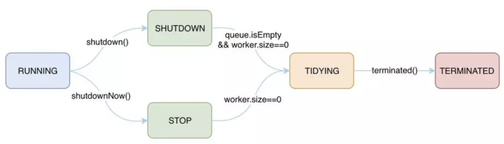
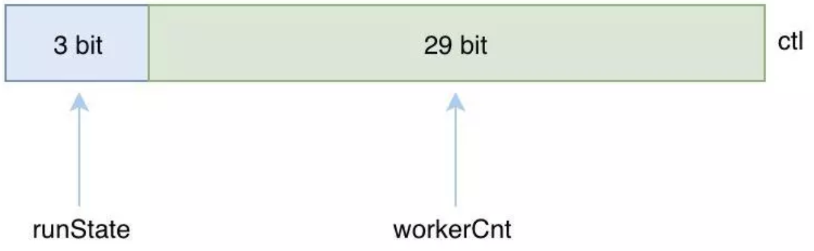
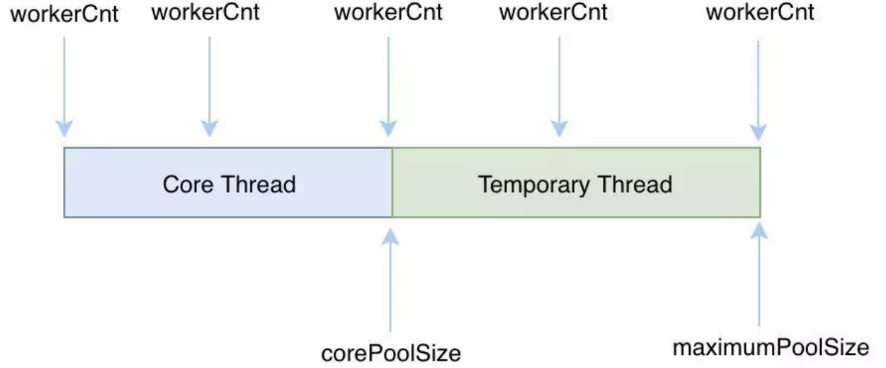
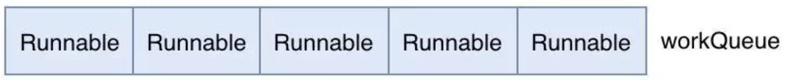
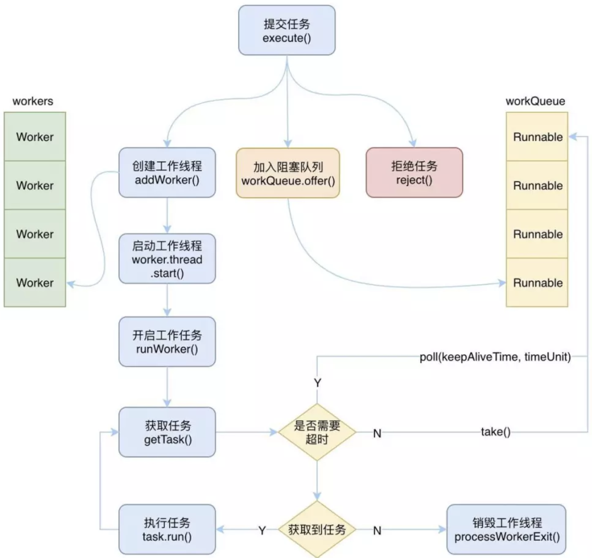
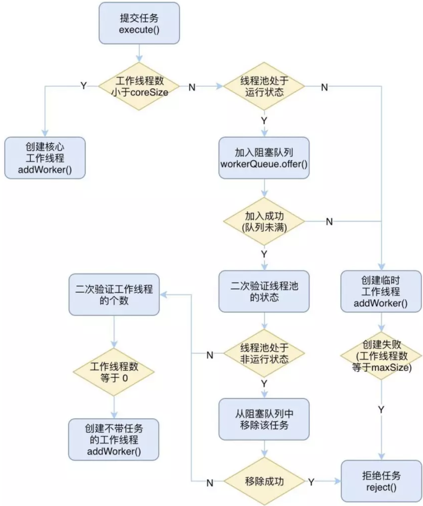

为了正确合理的使用线程池工具，我们有必要对线程池的原理进行了解。
本篇文章主要从三个方面来对线程池进行分析：线程池状态、重要属性、工作流程。
线程池状态
首先线程池是有状态的，这些状态标识这线程池内部的一些运行情况，线程池的开启到关闭的过程就是线程池状态的一个流转的过程。
线程池共有五种状态：

| 状态 | 含义 |
|---|---|
| RUNNING | 运行状态，该状态下线程池可以接受新的任务，也可以处理阻塞队列中的任务;执行 shutdown 方法可进入 SHUTDOWN 状态;执行 shutdownNow 方法可进入 STOP 状态 |
| SHUTDOWN | 待关闭状态，不再接受新的任务，继续处理阻塞队列中的任务;当阻塞队列中的任务为空，并且工作线程数为0时，进入 TIDYING 状态 |
| STOP | 停止状态，不接收新任务，也不处理阻塞队列中的任务，并且会尝试结束执行中的任务; 当工作线程数为0时，进入 TIDYING 状态 |
| TIDYING | 整理状态，此时任务都已经执行完毕，并且也没有工作线程; 执行 terminated 方法后进入 TERMINATED 状态 |
| TERMINATED | 终止状态，此时线程池完全终止了，并完成了所有资源的释放 |
重要属性
一个线程池的核心参数有很多，每个参数都有着特殊的作用，各个参数聚合在一起后将完成整个线程池的完整工作。
1、线程状态和工作线程数量
首先线程池是有状态的，不同状态下线程池的行为是不一样的，5种状态已经在上面说过了。
另外线程池肯定是需要线程去执行具体的任务的，所以在线程池中就封装了一个内部类 Worker 作为工作线程，每个 Worker 中都维持着一个 Thread。
线程池的重点之一就是控制线程资源合理高效的使用，所以必须控制工作线程的个数，所以需要保存当前线程池中工作线程的个数。
看到这里，你是否觉得需要用两个变量来保存线程池的状态和线程池中工作线程的个数呢？但是在 ThreadPoolExecutor 中只用了一个 AtomicInteger 型的变量就保存了这两个属性的值，那就是 ctl。

ctl 的高3位用来表示线程池的状态(runState)，低29位用来表示工作线程的个数(workerCnt)，为什么要用3位来表示线程池的状态呢，原因是线程池一共有5种状态，而2位只能表示出4种情况，所以至少需要3位才能表示得了5种状态。
2、核心线程数和最大线程数
现在有了标志工作线程的个数的变量了，那到底该有多少个线程才合适呢？线程多了浪费线程资源，少了又不能发挥线程池的性能。
为了解决这个问题，线程池设计了两个变量来协作，分别是：
- 核心线程数：corePoolSize 用来表示线程池中的核心线程的数量，也可以称为可闲置的线程数量
- 最大线程数：maximumPoolSize 用来表示线程池中最多能够创建的线程数量
现在我们有一个疑问，既然已经有了标识工作线程的个数的变量了，为什么还要有核心线程数、最大线程数呢？
其实你这样想就能够理解了，创建线程是有代价的，不能每次要执行一个任务时就创建一个线程，但是也不能在任务非常多的时候，只有少量的线程在执行，这样任务是来不及处理的，而是应该创建合适的足够多的线程来及时的处理任务。随着任务数量的变化，当任务数明显很小时，原本创建的多余的线程就没有必要再存活着了，因为这时使用少量的线程就能够处理的过来了，所以说真正工作的线程的数量，是随着任务的变化而变化的。
那核心线程数和最大线程数与工作线程个数的关系是什么呢？

工作线程的个数可能从0到最大线程数之间变化，当执行一段时间之后可能维持在 corePoolSize，但也不是绝对的，取决于核心线程是否允许被超时回收。
3、创建线程的工厂
既然是线程池，那自然少不了线程，线程该如何来创建呢？这个任务就交给了线程工厂 ThreadFactory 来完成。
4、缓存任务的阻塞队列
上面我们说了核心线程数和最大线程数，并且也介绍了工作线程的个数是在0和最大线程数之间变化的。但是不可能一下子就创建了所有线程，把线程池装满，而是有一个过程，这个过程是这样的：
当线程池接收到一个任务时，如果工作线程数没有达到corePoolSize，那么就会新建一个线程，并绑定该任务，直到工作线程的数量达到 corePoolSize 前都不会重用之前的线程。
当工作线程数达到 corePoolSize 了，这时又接收到新任务时，会将任务存放在一个阻塞队列中等待核心线程去执行。为什么不直接创建更多的线程来执行新任务呢，原因是核心线程中很可能已经有线程执行完自己的任务了，或者有其他线程马上就能处理完当前的任务，并且接下来就能投入到新的任务中去，所以阻塞队列是一种缓冲的机制，给核心线程一个机会让他们充分发挥自己的能力。另外一个值得考虑的原因是，创建线程毕竟是比较昂贵的，不可能一有任务要执行就去创建一个新的线程。
所以我们需要为线程池配备一个阻塞队列，用来临时缓存任务，这些任务将等待工作线程来执行。

5、非核心线程存活时间
上面我们说了当工作线程数达到 corePoolSize 时，线程池会将新接收到的任务存放在阻塞队列中，而阻塞队列又两种情况：一种是有界的队列，一种是无界的队列。
如果是无界队列，那么当核心线程都在忙的时候，所有新提交的任务都会被存放在该无界队列中，这时最大线程数将变得没有意义，因为阻塞队列不会存在被装满的情况。
如果是有界队列，那么当阻塞队列中装满了等待执行的任务，这时再有新任务提交时，线程池就需要创建新的“临时”线程来处理，相当于增派人手来处理任务。
但是创建的“临时”线程是有存活时间的，不可能让他们一直都存活着，当阻塞队列中的任务被执行完毕，并且又没有那么多新任务被提交时，“临时”线程就需要被回收销毁，在被回收销毁之前等待的这段时间，就是非核心线程的存活时间，也就是 keepAliveTime 属性。
那么什么是“非核心线程”呢？是不是先创建的线程就是核心线程，后创建的就是非核心线程呢？
其实核心线程跟创建的先后没有关系，而是跟工作线程的个数有关，如果当前工作线程的个数大于核心线程数，那么所有的线程都可能是“非核心线程”，都有被回收的可能。
一个线程执行完了一个任务后，会去阻塞队列里面取新的任务，在取到任务之前它就是一个闲置的线程。
取任务的方法有两种，一种是通过 take() 方法一直阻塞直到取出任务，另一种是通过 poll(keepAliveTime，timeUnit) 方法在一定时间内取出任务或者超时，如果超时这个线程就会被回收，请注意核心线程一般不会被回收。
那么怎么保证核心线程不会被回收呢？还是跟工作线程的个数有关，每一个线程在取任务的时候，线程池会比较当前的工作线程个数与核心线程数：
- 如果工作线程数小于当前的核心线程数，则使用第一种方法取任务，也就是没有超时回收，这时所有的工作线程都是“核心线程”，他们不会被回收；
- 如果大于核心线程数，则使用第二种方法取任务，一旦超时就回收，所以并没有绝对的核心线程，只要这个线程没有在存活时间内取到任务去执行就会被回收。
所以每个线程想要保住自己“核心线程”的身份，必须充分努力，尽可能快的获取到任务去执行，这样才能逃避被回收的命运。
核心线程一般不会被回收，但是也不是绝对的，如果我们设置了允许核心线程超时被回收的话，那么就没有核心线程这种说法了，所有的线程都会通过 poll(keepAliveTime, timeUnit) 来获取任务，一旦超时获取不到任务，就会被回收，一般很少会这样来使用，除非该线程池需要处理的任务非常少，并且频率也不高，不需要将核心线程一直维持着。
6、拒绝策略
虽然我们有了阻塞队列来对任务进行缓存，这从一定程度上为线程池的执行提供了缓冲期，但是如果是有界的阻塞队列，那就存在队列满的情况，也存在工作线程的数据已经达到最大线程数的时候。如果这时候再有新的任务提交时，显然线程池已经心有余而力不足了，因为既没有空余的队列空间来存放该任务，也无法创建新的线程来执行该任务了，所以这时我们就需要有一种拒绝策略，即 handler。
拒绝策略是一个 RejectedExecutionHandler 类型的变量，用户可以自行指定拒绝的策略，如果不指定的话，线程池将使用默认的拒绝策略：抛出异常。
在线程池中还为我们提供了很多其他可以选择的拒绝策略：
- 直接丢弃该任务
- 使用调用者线程执行该任务
- 丢弃任务队列中的最老的一个任务，然后提交该任务
工作流程
了解了线程池中所有的重要属性之后，现在我们需要来了解下线程池的工作流程了。

上图是一张线程池工作的精简图，实际的过程比这个要复杂的多，不过这些应该能够完全覆盖到线程池的整个工作流程了。
整个过程可以拆分成以下几个部分：
1、提交任务
当向线程池提交一个新的任务时，线程池有三种处理情况，分别是：创建一个工作线程来执行该任务、将任务加入阻塞队列、拒绝该任务。
提交任务的过程也可以拆分成以下几个部分：
- 当工作线程数小于核心线程数时，直接创建新的核心工作线程
- 当工作线程数不小于核心线程数时，就需要尝试将任务添加到阻塞队列中去
- 如果能够加入成功，说明队列还没有满，那么需要做以下的二次验证来保证添加进去的任务能够成功被执行
- 验证当前线程池的运行状态，如果是非RUNNING状态，则需要将任务从阻塞队列中移除，然后拒绝该任务
- 验证当前线程池中的工作线程的个数，如果为0，则需要主动添加一个空工作线程来执行刚刚添加到阻塞队列中的任务
- 如果加入失败，则说明队列已经满了，那么这时就需要创建新的“临时”工作线程来执行任务
- 如果创建成功，则直接执行该任务
- 如果创建失败，则说明工作线程数已经等于最大线程数了，则只能拒绝该任务了
整个过程可以用下面这张图来表示：

2、创建工作线程
创建工作线程需要做一系列的判断，需要确保当前线程池可以创建新的线程之后，才能创建。
首先，当线程池的状态是 SHUTDOWN 或者 STOP 时，则不能创建新的线程。
另外，当线程工厂创建线程失败时，也不能创建新的线程。
还有就是当前工作线程的数量与核心线程数、最大线程数进行比较，如果前者大于后者的话，也不允许创建。
除此之外，会尝试通过 CAS 来自增工作线程的个数，如果自增成功了，则会创建新的工作线程，即 Worker 对象。
然后加锁进行二次验证是否能够创建工作线程，最后如果创建成功，则会启动该工作线程。
3、启动工作线程
当工作线程创建成功后，也就是 Worker 对象已经创建好了，这时就需要启动该工作线程，让线程开始干活了，Worker 对象中关联着一个 Thread，所以要启动工作线程的话，只要通过 worker.thread.start() 来启动该线程即可。
启动完了之后，就会执行 Worker 对象的 run 方法，因为 Worker 实现了 Runnable 接口，所以本质上 Worker 也是一个线程。
通过线程 start 开启之后就会调用到 Runnable 的 run 方法，在 worker 对象的 run 方法中，调用了 runWorker(this) 方法，也就是把当前对象传递给了 runWorker 方法，让他来执行。
4、获取任务并执行
在 runWorker 方法被调用之后，就是执行具体的任务了，首先需要拿到一个可以执行的任务，而 Worker 对象中默认绑定了一个任务，如果该任务不为空的话，那么就是直接执行。
执行完了之后，就会去阻塞队列中获取任务来执行，而获取任务的过程，需要考虑当前工作线程的个数。
如果工作线程数大于核心线程数，那么就需要通过 poll 来获取，因为这时需要对闲置的线程进行回收；
如果工作线程数小于等于核心线程数，那么就可以通过 take 来获取了，因此这时所有的线程都是核心线程，不需要进行回收，前提是没有设置 allowCoreThreadTimeOut